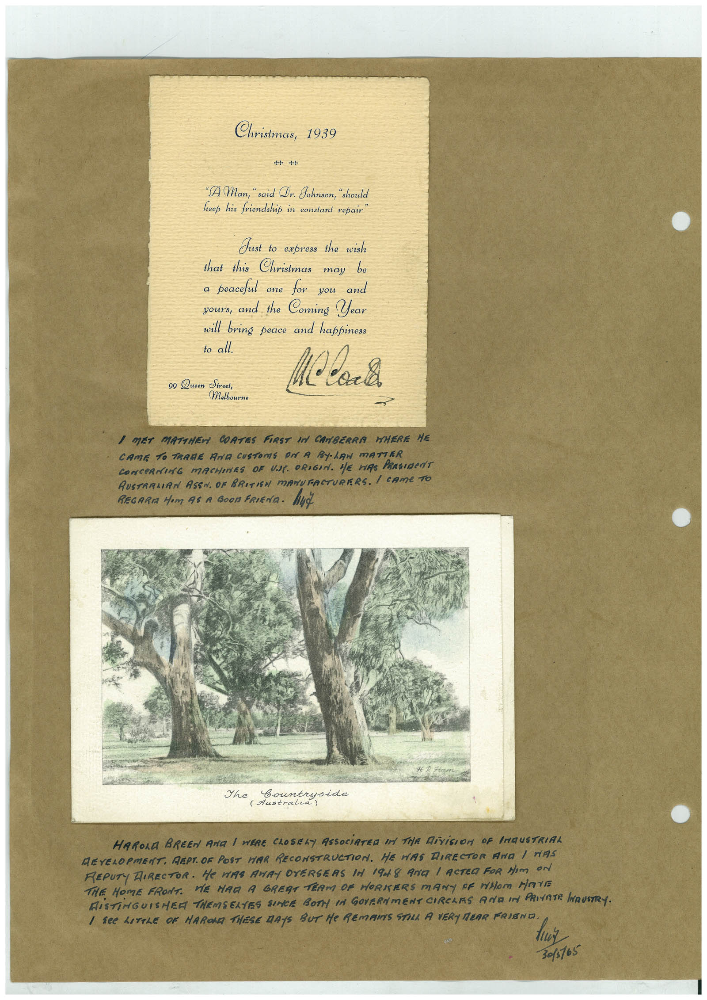

Book 1 · scan 071


Description
Transcription
Context
Review notes
Compare the machine draft with the scan. Handwriting and names need human review.
Artifacts
Edit the artifacts field in this note’s frontmatter to change these records. This summary is generated.
B01-S071-A01 — Letter & Handwritten note — Book 1, scan 071
Types: Typed document, Letter, Handwritten note
Scope: Whole scanned page; individual items can be split out during review.
Caption: Not mapped yet.
Caption source: Not recorded yet.
Caption status: unmapped
Machine transcription
Christmas, 1939 -H- "A Man, " said Dr. Johnson, "shoul feep his friendshit in constant repair Just to express the wish that this Christmas may be a peaceful one for you and yours, and the Coming Year will bring peace and happiness to all. 99 Queen Street, Molbourne I MET MATTHEN COATES FIRST IN CANBERRA WHERE HE CAME TO TRARE AND CUSTOMS ON A BYLAN mATTER CONCeRNING MACHINES OF UAL. ORIGIN. HE HAS PRESIDeNT RUSTRAMIAN ASSN. OF BRITISH MANUFACTURERS. I CAMe TO REGARIA Mom AS A GOOn FRIENA. HUt Countryside HARORA BREEN ANG I WERE CLOSELY ASSOCiATED IN THR DiViGION OF INGUSTRIAL DEVELOPMENT. REPT. OF POST HAR RECONSTRUCTION. HE MAS DIRECTOR ANA / NAS REPUTY DIRECTOR. He WAR ANAY OVERSERS A 1948 ARE / ACTEA FOR NIm ON THE HOME FRONT. WE HAD A GREST TEAM OF HORKERS MANY OF WHOM MOVE RiSTiNGUISHER THEMSELTES SINCE BOTT IN GOVERNMENT CIRCHAS AND IN PRIVATE HAUSTRY. 3015165